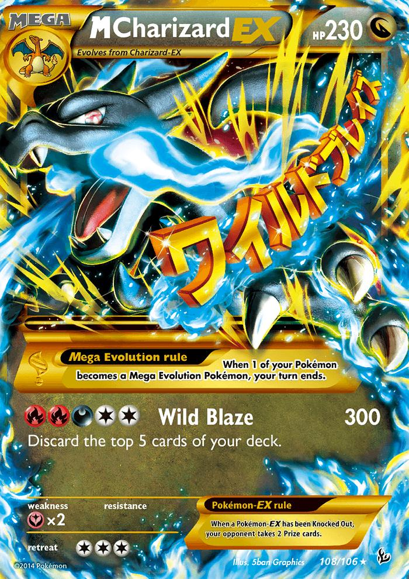
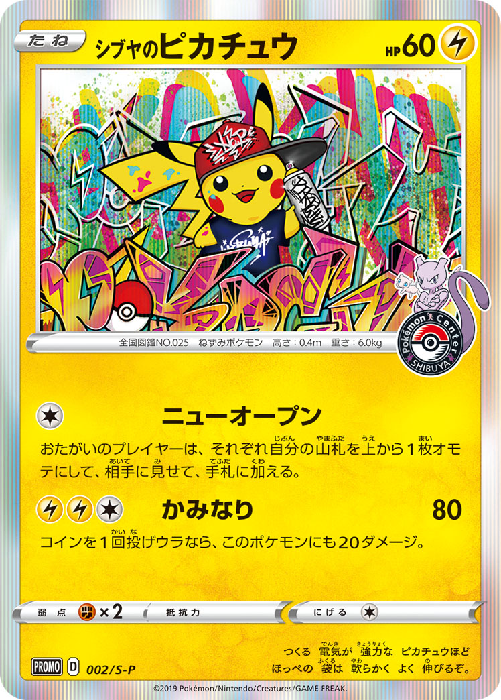

この記事のまとめ
PSAが2025年に公開したFraud Reportは、トレカ業界に衝撃を与えた。ポケカの偽造件数は前年比+125%、改ざんにいたっては+407%という異常な増加率。PSAが摘発・阻止した偽造品の推定市場価値は2億ドル（約320億円）を超えた。本記事ではレポートの重要データを図解しながら解説し、eBayでPSA鑑定品を安全に買うための実践ガイドもまとめた。
まず数字の規模感を把握する
PSAが2025年に公開した「2025 Fraud Report」は、トレカ市場の偽造・改ざん問題がいかに深刻な段階に達しているかを示すレポートだ。最も目を引くのが「$200M+（2億ドル超）」という数字。これはPSAが鑑定審査で摘発・阻止した偽造品・改ざん品の推定市場価値の合計だ。
仮に本物として流通していたら、日本円にして320億円以上の偽物カードが市場に出回っていた計算になる。一枚一枚の積み重ねがこれほどの規模になるという事実は、この問題を個人の話ではなく市場全体の構造問題として捉えるべきことを示している。
出典：PSA 2025 Fraud Report
偽造・改ざんともにスポーツカードよりTCG（トレーディングカードゲーム）の割合が高く、特に改ざんにいたってはTCGが約70%を占める。その中心にあるのがポケモンカードだ。
「偽造」と「改ざん」は別物——まず違いを理解する
レポートを読む前にまず整理したいのが、「偽造」と「改ざん」の違いだ。混同されやすいが、まったく別の問題を指している。
偽造（Counterfeit）とは、最初から偽物として作られたカードのこと。本物のカードを一切使わず、印刷・素材・デザインを模倣して作る。いわゆる「コピーカード」「フェイクカード」がこれにあたる。
改ざん（Altered）とは、本物のカードを加工・細工してグレードを上げようとする行為だ。本物のカードが出発点になるため、一見すると発見が難しい。主な手法は以下の通りだ。
ポケカ偽造ランキング——全体1位はMJだがポケカが席巻
PSAのレポートには「偽造件数Top10」が掲載されている。全体1位は1986 Fleer Michael Jordan #57（バスケットボールカード）だったが、2〜6位はポケモンカードが独占。特に「M Charizard EX」シリーズが複数ランクインしており、リザードンへの偽造集中ぶりがデータとして示された形だ。

偽造ランキング 2位
M Charizard EX #108
2014 Pokémon XY Flashfire｜シークレットレア

改ざんランキング 1位
シブヤのピカチュウ #002
2019 Pokémon JP S-P Promo｜渋谷ポケモンセンター限定
また「最も成長率の高い偽造ターゲット」としてはM Gengar EX（+656%）、Lugia EX（+640%）、M Rayquaza EX（+520%）、Charizard ex 151（+480%）と、いずれもポケカがトップ4を独占した。
出典：PSA 2025 Fraud Report
改ざんはポケカがほぼ独占——これが示す構造的な問題
偽造ランキングでは全体1位にMichael Jordanが入るなど他ジャンルも混在していたが、改ざんランキングTop10はほぼポケモンカードが独占した。スポーツカードの改ざん増加率は+1.6%にとどまる一方、ポケカは+407%という突出した数字を叩き出している。
編集部考察
なぜポケカだけがここまで改ざんの標的になるのか。それはポケカの市場構造に原因がある。PSA9とPSA10の価格差が非常に大きく、例えば人気カードではグレードが1つ上がるだけで価格が2〜5倍になるケースも珍しくない。その「差額」が改ざんのインセンティブになっている。
スポーツカードは一般的に紙質が硬く、フォイル加工が複雑なため改ざんの難易度が高い。一方でポケカ、特に日本語版のプロモカードはフォーマットが統一されていることから、縁の塗り直しやトリミングが比較的容易とされる。入手困難な日本語版限定プロモが改ざんTop10に多く並ぶのも、「少ない手間で大きなリターン」という計算が成立するからだろう。
PSAはどうやって偽造・改ざんを見抜くのか
PSAは2億7000万枚以上のカード画像・サンプルを収録した参照ライブラリを持ち、AIと人間の専門家を組み合わせた鑑定体制を取っている。2025年には専門トレーニングに8万時間以上を投資し、鑑定士は独立前に13,000枚以上の監督下審査をこなすという。
興味深いのが「臭いでも判別できるケースがある」という記述だ。ベテランの鑑定士は紙の触感だけで年代を識別できることもあるといい、AIと人間の専門知識の組み合わせが最も強力な認証手段だとPSAは述べている。
eBayで騙されないための実践チェックリスト
ここからは実際にeBayでPSA鑑定ポケカを購入する際の実践ガイドだ。PSAのレポートのデータと、eBayでの実体験をもとにまとめた。
- 1 商品写真の印字に違和感がないか確認する 写真を見たときに文字のにじみ・色ズレ・輪郭のボケを感じたらそれは要注意サインだ。偽造カードの多くはスキャンをもとに印刷するため、拡大すると本物より解像度が低くなる。テキスト部分をよく見て、違和感があれば即スルーでいい。
- 2 商品画像の解像度が極端に低い出品は疑う 本物のカードを持っている出品者なら、高画質で撮影できるはずだ。あえて低解像度・ぼかし・遠距離撮影にしている出品は「細部を見せたくない」意図がある可能性が高い。特にPSAスラブ（ケース）のラベル部分がはっきり読めない出品には注意が必要だ。
- 3 PSAの認証番号をPSAアプリで必ず照合する PSA鑑定品にはスラブのラベルに固有の認証番号が記載されている。PSA公式アプリまたはWebサイトで番号を検索すると、そのカードの正規情報（カード名・グレード・鑑定年）が確認できる。番号が存在しない・カード情報が一致しないものは偽造スラブの可能性がある。
- 4 eBay Authenticity Guaranteeのマークを確認する eBayはPSAと提携した「Authenticity Guarantee（AG）」プログラムを運営しており、対象商品は購入者に届く前にPSAが真贋検査を実施する。$250以上のトレカ出品が対象になっていることが多く、このマークがある出品は追加の安心感がある。
- 5 市場価格より大幅に安い出品は理由を考える 「安い＝お得」とは限らない。PSA10のリザードンが相場の半額以下で出品されているなら、それには必ず理由がある。偽造品・改ざん品・スラブ開封品・認証番号の使い回しなどが考えられる。相場を把握した上で、不自然に安い出品には慎重に向き合おう。
- 6 出品者の評価・取引履歴を確認する eBayの評価システムは完璧ではないが、取引実績が多く評価が高い出品者はそれだけ信頼の積み重ねがある。新規アカウントや評価が極端に少ない出品者からの高額カード購入は慎重に。過去の取引商品も確認できるので、一貫してトレカを扱っているかどうかも参考になる。
- 7 リザードン・ピカチュウ系は特に慎重に PSAのデータが示す通り、リザードン（特にM Charizard EX）はあらゆる指標で偽造Top常連だ。これらのカードを購入する際は上記の全チェックをより徹底的に行うことを推奨する。人気があるからこそ狙われやすい、という事実を常に念頭に置いてほしい。
編集部まとめ——偽物は今後も増え続ける
PSAの2025 Fraud Reportを通じて改めて感じるのは、市場が大きくなればなるほど偽造業者が入り込む余地も増えるという当然の現実だ。ポケカ市場はここ数年で爆発的に拡大し、一枚のカードが数百万円の価値を持つようになった。その規模が大きくなれば、それだけ「偽物を作って儲けよう」という動機も強くなる。
技術の進化も懸念材料だ。印刷技術・素材技術が上がれば、今より精巧な偽物が作られるようになる。「目で見ただけでは分からない」レベルの偽造品が増える未来は、決して遠い話ではないと考えている。
一方でPSAも手をこまねいているわけではない。2億ドル以上の偽造品を阻止したという実績、AIと人間の組み合わせによる鑑定強化、トレーニングへの大規模投資——これらがどこまで効果を発揮するかは、今後のレポートで継続して追っていきたい。
このサイトについて
Grading Pulse（ぐれぱる）では、eBayに出品されているPSA鑑定ポケカをまとめて確認できる。カード一覧や相場の参考として活用してほしい。購入判断はご自身でお願いしたいが、このような偽造・改ざんに関する情報も発信しながら、安全なトレカ取引の一助になれればと思っている。